TECH GUY / RUN-EXP-08
Pigmento, volume
e passagem.
Uma sala pictórica jogável na Unity. Mesma física e combate; um teste limitado de identidade, portas e fluxo.
Mesma sala. Mesma câmera. Dois tratamentos.
Capturas reais com jogador/roster e HUD. Antes/depois congelados no mesmo ponto. A referência A é a arte05 produtiva; B é o protótipo08. A cópia isolada deixa o próximo nó com arte normal.

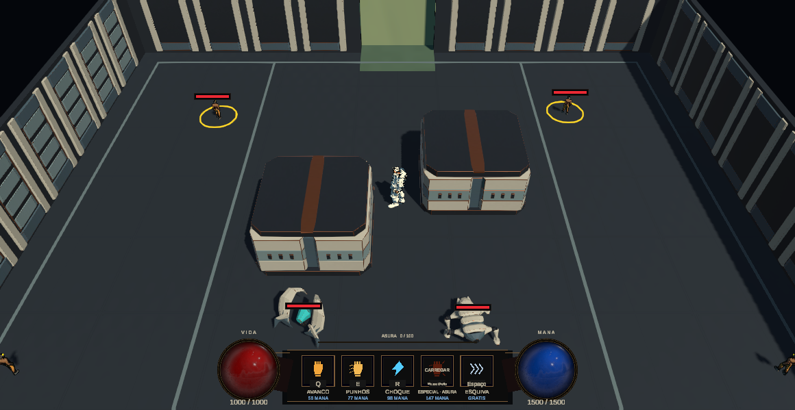

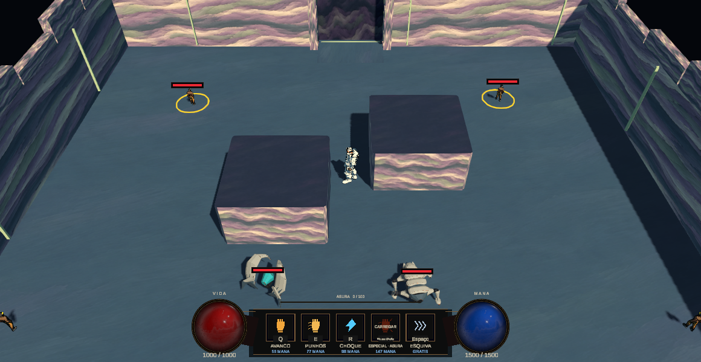
O jogador atravessa; a arquitetura não o esconde.
O lintel da primeira versão ocultavaocorpo. A revisão abriuocentro superior do pórtico, preservou4 m delargura física e associou os apoios ao fader existente. A transição usa5 m do corredor nativo, sem adicionar tempo morto.

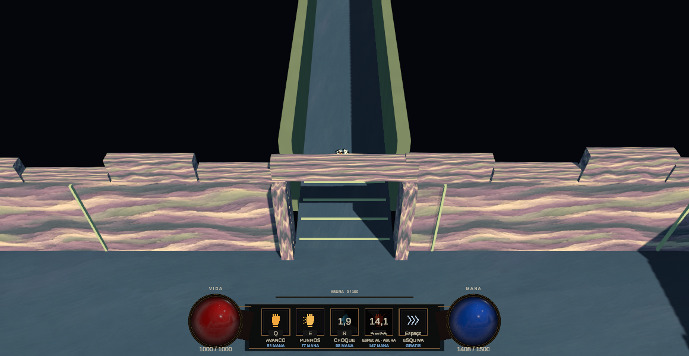

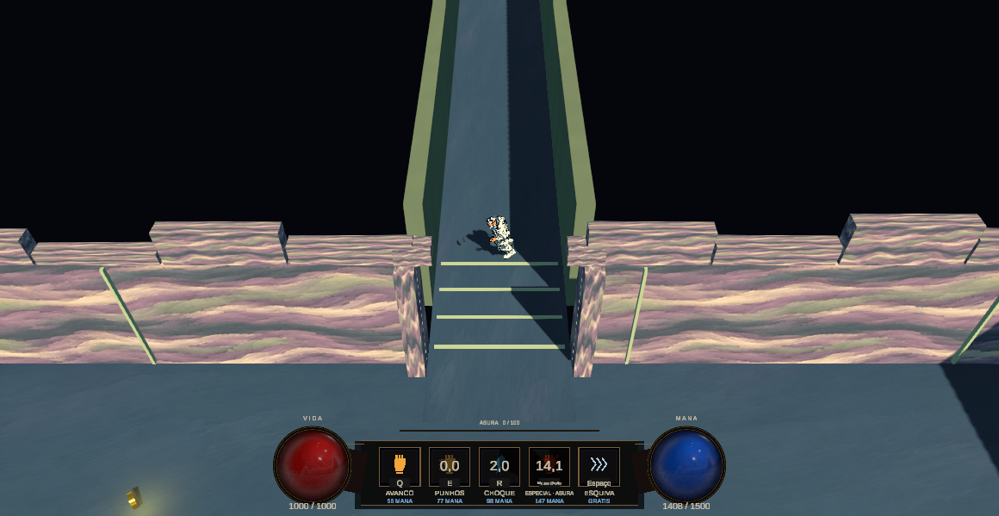

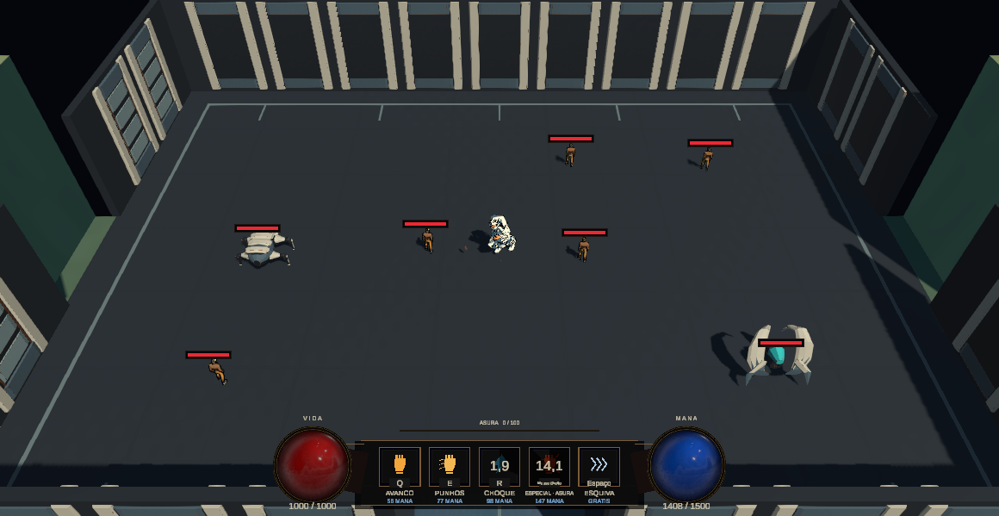

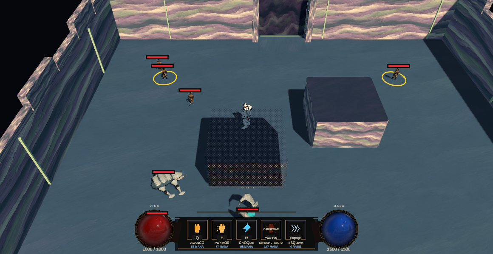
Da referência aprovada ao jogo real

Fontes de pintura e limite de acabamento
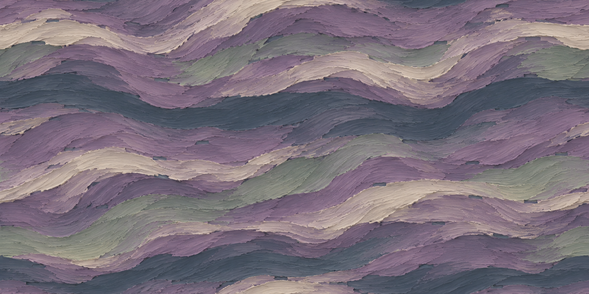
DoisPNG originais doImageGen, prompts incluídos. O protótipo não reproduz todo detalhe/curvatura da pintura conceitual; mantém volumes/rotas físicos aprovados. SemDCC, não háfonte blend/PSD fictícia.
Combate na sala implementada

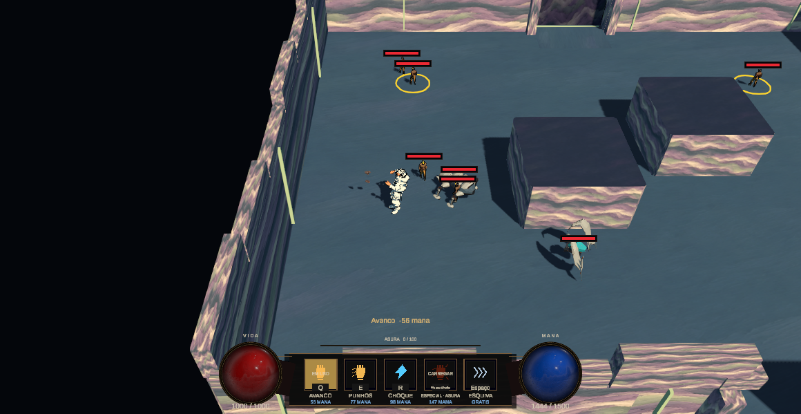

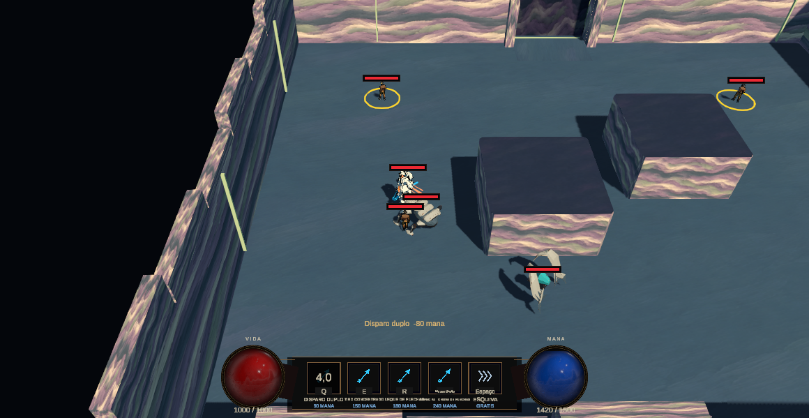

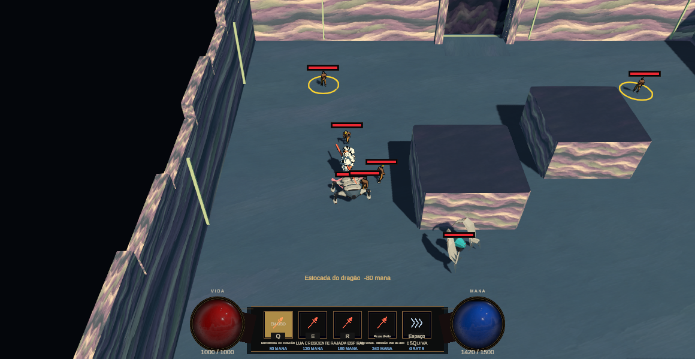

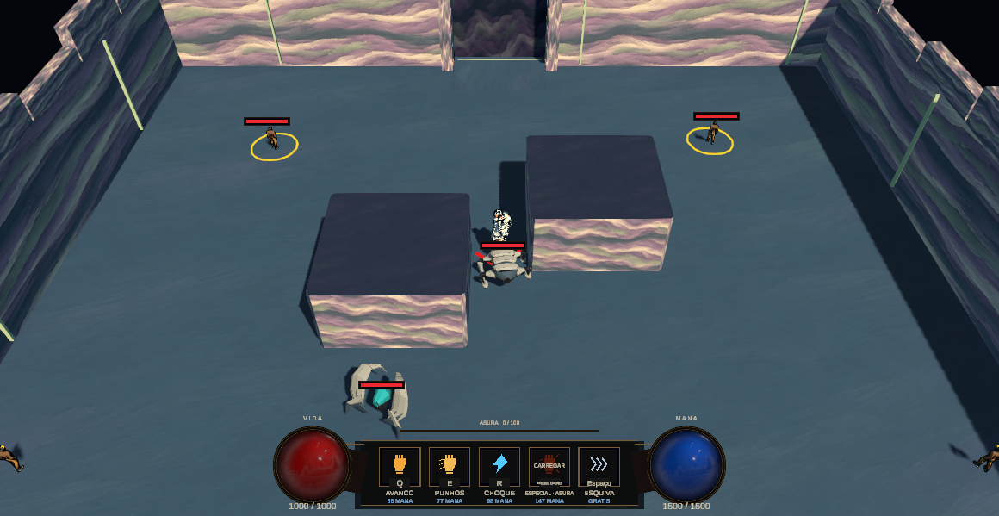

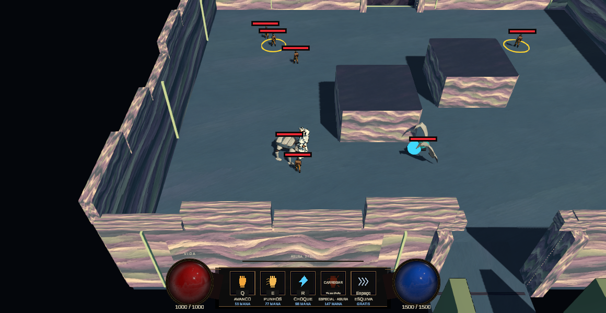

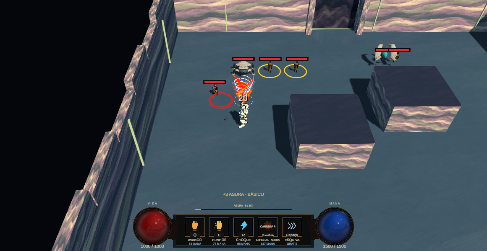

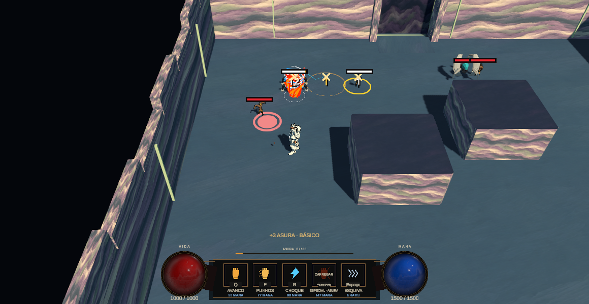
Gameplay automatizado: imunidade/recursos/warps declarados. Tripla usa composição controlada egrants em memória; nenhum boon foi refeito. Não é playthrough humano ouprova deobtenção natural.
Custo: observação local, sem promessa de otimização
| Versão | Amostras | Quadro mediana/p95 ms | Main Thread mediana/p95 ms | Draw calls mediana | Memória alocada MiB |
| Baseline3D | 747 | 5.158/7.334 | 5.175/7.370 | 366 | 1169.40 |
| Protótipo pictórico | 726 | 5.109/6.740 | 5.092/6.737 | 418 | 1169.42 |
Editor, ABBA, mesmo roster inicial e AI ativa; agentes e população evoluem entre blocos. Baseline teve [6, 7, 8] atores ativos; protótipo [6, 7]. GPU, VRAM e Standalone08 não medidos. O ajuste de sombras/passe Ink reduziu o protótipo de 587 para 418 draw calls de mediana; baseline 366. Amostras e condições incluídas.
CSV bruto · Condições · Resumo calculadoReprodução, auditoria e decisão
NaUnity: Tools/Tech Guy/RUN-EXP-08/Open isolated room; Play; selecionar nó 1. Toggle A/B pelo menu08 durantePlay. Produção, input, economia eboons permanecem nosowners atuais.
- RUN_EXP_08_0_BASELINE.md · Markdown
- RUN_EXP_08_1_ROOM_SHAPE.md · Markdown
- RUN_EXP_08_2_PORTAS_E_FLUXO.md · Markdown
- RUN_EXP_08_3_HYBRID_2_5D.md · Markdown
- RUN_EXP_08_4_ATMOSFERA_E_POLISH.md · Markdown
- RUN_EXP_08_5_VALIDACAO.md · Markdown
- RUN_EXP_08_RELATORIO.md · Markdown
Integridade:2368 arquivos antigos e47 preferências idênticos;25 novos arquivos Unity. HTMLverificado estaticamente; renderização emnavegador não testada por bloqueio defile: da ferramenta. Fontes/conceitos/screenshots são categorias separadas.